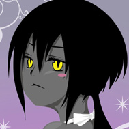

[已完結] 【原創３ｄ１００】受人委託之異地的旅
森林大海 小學部畢業生
| 上台說話的大中小簡繁發表於 10-14-2012 02:32 PM 只看該作者 |
| 森林大海 小學部畢業生
| 上台說話的大中小簡繁發表於 10-14-2012 02:32 PM 只看該作者  【原創３ｄ１００】受人委託之異地的旅骰網：http://www.wasabistudio.ca/scripts/dice.php?c=3d100 團務有問題報告區：http://revo-create.com/viewthread.php?tid=68105&extra=page=1&page=7 正劇開始： ＝＝＝＝＝＝＝＝＝＝ 在夜黑風高的酒吧一隅，一名小男孩召喚你們而來到創革城酒吧。。。 ＂首先，先介紹你們彼此認識吧？＂ 就這樣以此為開場白，夜涼如水，酒吧中大家也不時看到你們這群不屬於白天的組合，或許。。。因為夜的關係沒人在乎？ （設定你們是第一次認識彼此的，所以開場依照個人性格特色介紹自己的角色下：） [ 森林大海 於 11-17-2012 10:20 AM 重新編輯過 ] |
千幻雪舞 小學部畢業生
| 樓下發言的大中小簡繁發表於 10-14-2012 03:23 PM 只看該作者 艾希莉雅先環視一下聚集在這裡的人，女僕、裁縫，背後不時冒出觸手的男子、奇裝異服的青年和一位氣勢非凡的亡靈，心想(這些人是這次任務中的隊友麼?.....我很懷疑任務是否成功) 「你們好，我是來自卡索恩世界的劍士，我的名字是艾希莉雅‧格蘭德，曾是冒險團的團長」 艾希莉雅首先打破沉默，發起對話 =============背後靈============== 艾希莉雅是異世界的住民，對她來說牛麵的服裝是很特別的 |
| 藍刺蝟 掛機刺蝟娘  初等部畢業生
| 3☆大中小簡繁發表於 10-14-2012 03:39 PM 只看該作者 「……哥哥！任何事我都願意做！」哥哥哥他回來了！他他他需要我！ 啊！他一定餓了，我得做菜給他吃－－不不不我的廚藝還不行，還沒準備－－啊啊啊怎麼辦幹嘛這時候回來啊！ 引用:「你們好，我是來自卡索恩世界的劍士，我的名字是艾希莉雅‧格蘭德，曾是冒險團的團長」 －－－－－－場外線 如果雅蔓妲是哈哈的女僕，那應該都看過她吧？（但認不認識就不一定了） 這次我想試試看第一人稱。 [ 藍刺蝟 於 10-14-2012 08:36 PM 重新編輯過 ] |
| 銀米薩月獅 銀米  初等部畢業生
| 4☆大中小簡繁發表於 10-14-2012 06:45 PM 只看該作者 看著前兩人的自我介紹，牛麵心想： 頭香被搶走了……沒關係！ 牛麵奮力一跳，雙手握拳舉向天。 他中氣十足地宣告：『大家好，我是爾琉大學資工三的鐘聖悠，外號是牛麵，耶！』隨著『耶！』，高舉的雙拳比出『萬歲』的手勢。 『我的興趣是吃牛肉麵、牛肉拉麵和牛肉餛飩麵，目前單身喔！理想對象是會煮牛肉麵的女孩。』牛麵開玩笑地說道，完全不考慮在場的人是否都知道他提到的食物。 『接在我後面自介的，要說興趣和徵偶條件喔！』他笑嘻嘻地看著剩下的人。 |
不劍客 小學部畢業生
| 5☆大中小簡繁發表於 10-14-2012 11:15 PM 只看該作者 引用:原文由 藍刺蝟 於 10-14-2012 03:39 PM 發表 將軍緩緩將頭轉向聲音來源，突然間，他雙眼睜大，漲紅了臉 。 他站起身子，敬禮「...那個，敝姓恭，名常彰，叫我恭將軍就可以了。不對，我已經不是將軍了，不，我看還是叫我恭將軍吧，用了大半輩子要改也....」 引用:原文由 銀米薩月獅 於 10-14-2012 06:45 PM 發表 但一想起以前的同僚，他像是洩了氣的氣球一般瞬間癱軟下來 「一切隨緣吧。」又回復成淡淡的語氣 _________________場外_______________________ ....我當初被什麼打到才會加上恐女這條的.... 對了...有一個設定上的漏洞，恭將軍拿了把鐵傘....也就是他可以拿著東西，設定上是實體的，身上穿的甲也是實體就是，傷害部份可以直接被砍中，使用穿牆什麼的一般不會用，要用也是脫甲的情況，這樣設定GM應該比較方便吧？ [ 不劍客 於 10-14-2012 11:17 PM 重新編輯過 ] |
——大同電鍋，您戰場上的心靈支柱—— | |
| 藍刺蝟 掛機刺蝟娘 初等部畢業生
| 6☆大中小簡繁發表於 10-15-2012 12:00 AM 只看該作者 引用:『大家好，我是爾琉大學資工三的鐘聖悠，外號是牛麵，耶！』隨著『耶！』 引用:「隨便上點什麼好料的吧...不過我好像也不用吃」 不行！我的心裡已經有哥哥了！ 「我的、我的擇偶條件，小小的、可愛的－－啊！」 雅蔓妲用手遮著臉。這時，一旁自稱恭將軍的鬼魂說話了。 「啊？甚麼？請、請問要點甚麼？」為甚麼要敬禮？我、我做了甚麼嗎？ 女孩於是也對著將軍敬禮。 －－－－－－場外線 糟糕，內心獨白根本就寫不出角色做了啥動作啊！  只好引入旁白惹 |
| 風音笑笑  小學部畢業生
| 7☆大中小簡繁發表於 10-15-2012 12:48 AM 只看該作者 「咳咳。大家好－我叫史卡托‧邁爾森－」兩聲輕咳後，爽朗的男音響起，用不是很大聲但大家都聽得到的音量自我介紹著，「－是未來的裁縫師，現在還在見習中！（燦笑）」 「卡索恩世界？那是在哪？劍士嗎......」看著艾希莉亞一身騎士裝扮，再加上腰際上的那把劍，史卡托由衷地說：「好像很厲害呢！」 「雅蔓妲，妳好。」史卡托微笑著說道：「別這麼緊張啦，我想薩爾唤我們過來是有事要說的，而妳也是其中一員，先別忙，聽聽他怎麼說吧？放輕鬆點～」 「爾琉大學資工...？嗯..所以稱呼你牛麵就好了嗎？」又一個沒聽過的地方，而對方的穿著也很奇特，史卡托好奇地打量著。 「唔挖說話了！  恭...恭將軍是嗎？你是什麼東西...？」史卡托緩步接近，想看清楚恭將軍的樣子...「變紅了好有趣 恭...恭將軍是嗎？你是什麼東西...？」史卡托緩步接近，想看清楚恭將軍的樣子...「變紅了好有趣 」 」聽完恭將軍的擇偶條件，史卡托笑著對牛麵道：「哈哈哈！還好我不是接在你後面介紹的嗎 」============================================================================================== 場外： 糟糕了史卡托好像真的很多話  [ 風音笑笑 於 10-15-2012 12:55 AM 重新編輯過 ] |
Hazmole 小學部畢業生
| 8☆大中小簡繁發表於 10-15-2012 01:51 AM 只看該作者 「喔哈哈，不愧是『先生』認識的人啊，這還真是見識非凡啊！」爽朗的坎圖魯哈哈大笑，並對眾人伸出右手：「哈哈，大家好，我是某個偏僻酒店的老闆，叫我坎圖魯就好。」 引用:他中氣十足地宣告：『大家好，我是爾琉大學資工三的鐘聖悠，外號是牛麵，耶！』隨著『耶！』，高舉的雙拳比出『萬歲』的手勢。 「雖然不是接在少年後面介紹……哈哈，興趣跟擇偶條件啊……嗯。」坎圖魯認真的想了下，隨即答到：「我的興趣，應該算是打打獵吧……雖然體力不怎麼好就是了，哈哈。至於擇偶條件嗎？」 說著亮起神秘的微笑：「呵呵，這可是秘密呢。」 「艾希莉亞、雅蔓妲、牛麵、恭將軍、史卡托嗎……呵呵，接下來請多多指教啦。」坎圖魯散發著和善的氛圍，一臉誠摯的向大家喊到。 ＝＝＝＝ 其實我對確切團員數還是不太確定……有漏掉再改好了…… |
| 銀米薩月獅 銀米 初等部畢業生
| 9☆大中小簡繁發表於 10-15-2012 02:56 AM 只看該作者 引用:「咦？」等……等一下，「要、要點牛肉麵、牛肉拉麵和餛飩麵嗎？咦？我會煮啊……啊！不行不行……」 事實上，牛麵一眼看到她，就知道是自己不擅長應付的類型：不但是傳說中的女僕，還是氣質美少女！如果她的年紀比牛麵小的話，那可就是夢中的夢中情人啊！ 想到這點，牛麵就無法用平常心和雅蔓妲相處．但是對於接下來要一起冒險的同伴，裝熟是很重要的，牛麵不禁陷入幸福的煩惱中． 至於同為女性的格蘭德，牛麵對她的第一印象是正經八百（＝不能隨便開玩笑）的美女劍士（＝氣勢美女≠氣質美女），雖然也不太知道該怎麼相處，但是問題比較小一點，至少他的身體不會自動失常． 「牛肉麵很棒吧！」牛麵用輕鬆的語氣補上一句話，結束話題． 引用:「至於興趣是練武喝酒...徵偶條件...」他臉又更紅了，明明跟弟兄在一起時可以豪爽回答的問題現在反而扭捏起來。 打鐵要趁熱，牛麵追問：「恭將軍，如果您想換一個稱呼的話，那我可以叫您張爺嗎？」 由於對方的年紀、身分和氣勢，牛麵特意用禮貌的方式應對． 引用:「爾琉大學資工...？嗯..所以稱呼你牛麵就好了嗎？」又一個沒聽過的地方，而對方的穿著也很奇特，史卡托好奇地打量著。 他將空氣麥克風舉向邁爾森，問道：「那麼，請問我叫什麼呢？」 引用:
牛麵覺得坎圖魯應該是可以開點玩笑的人． －－－－－－－－－－－－－－－－－－－－－－－－－－－－－－－－－ 場外： 我突然發現原來我沒有設計牛麵的服裝，沒關係，就現在設計吧！ 牛麵的服飾為：黑色T-shirt，上面有深具設計感的英文字：「Better late than never.」． 格子襯衫，顏色為磚紅、白色和介於兩者之間的顏色． 藍色牛仔褲，有洗白處理，左邊口袋下方有精美紫色和白色花紋． 球鞋，顏色以紅白為主，鞋帶末端都已開花． 電子錶，深藍色配銀白色． 另外，似乎本團的男性角色都有和女性有關的弱點（除了坎圖魯是特殊骰）呢． [ 銀米薩月獅 於 10-15-2012 03:09 AM 重新編輯過 ] |
| 千幻雪舞 小學部畢業生
| 10☆大中小簡繁發表於 10-15-2012 12:51 PM 只看該作者 引用:「啊！我是－－不是－－客人您要點甚麼？－－不不不！」糟糕我在幹嘛，「我、我是這理的女僕，雅蔓妲，請多指教！」 引用:卡索恩世界？那是在哪？劍士嗎......」看著艾希莉亞一身騎士裝扮，再加上腰際上的那把劍，史卡托由衷地說：「好像很厲害呢！」 艾希莉雅對史卡托的稱讚做出回應 引用:大叔抓了抓頭，笑了笑：「牛麵少年啊……哈哈，真是個有趣的人。」 [ 千幻雪舞 於 10-15-2012 12:52 PM 重新編輯過 ] |
| 風音笑笑 小學部畢業生
| 11☆大中小簡繁發表於 10-15-2012 11:24 PM 只看該作者 引用:原文由 藍刺蝟 於 10-15-2012 12:00 AM 發表 引用:原文由 Hazmole 於 10-15-2012 01:51 AM 發表 史卡托雖然覺得坎圖魯的身體比例有點奇特...但他給人的感覺似乎沒有外表那麼嚇人，反而有種......讓人安心的感覺？？？ 引用:原文由 銀米薩月獅 於 10-15-2012 02:56 AM 發表 引用:原文由 銀米薩月獅 於 10-15-2012 02:56 AM 發表 「嗯......鍾聖悠、牛麵、麵麵小寶(噗)..貝......」史卡托邊忍笑邊回答，「陌生人的話應該不算，因為我已經認識你了...而且之後我們還要合力完成任務呢，所以...我就叫你牛麵吧？至於麵麵小寶貝...我看..還是算了......哈哈哈哈哈 」一手扶著牛麵的肩，一手捧著肚子...史卡托最後還是忍不住大笑出來。引用:原文由 千幻雪舞 於 10-15-2012 12:51 PM 發表 史卡托還在笑...因此似乎無法好好回應艾希莉雅。 ===================================================================================== 場外： 提問！請問哈絲桑，坎圖魯背上的觸手....現在是出來的嗎???還是收起來的看不到呢 ?[ 風音笑笑 於 10-15-2012 11:29 PM 重新編輯過 ] |
| 不劍客 小學部畢業生
| 12☆大中小簡繁發表於 10-16-2012 12:23 AM 只看該作者 引用:原文由 藍刺蝟 於 10-15-2012 12:00 AM 發表 引用:原文由 銀米薩月獅 於 10-15-2012 02:56 AM 發表 引用:原文由 千幻雪舞 於 10-15-2012 12:51 PM 發表  反正將軍也大木頭一塊） 反正將軍也大木頭一塊）引用:原文由 Hazmole 於 10-15-2012 01:51 AM 發表 ____________________場外___________________ 回牛麵還有風音：ＷＷ還是被發現了阿，多念將軍全名幾次吧 括弧內是場外吐嘈，實在不吐不快阿ＸＤ |
——大同電鍋，您戰場上的心靈支柱—— | |
| 銀米薩月獅 銀米 初等部畢業生
| 13☆大中小簡繁發表於 10-16-2012 01:08 AM 只看該作者 引用:「我不算很厲害，我只不過在突擊以及反擊技上略有體悟而已。」 雖然他根本不知道什麼是突擊和反擊技． 引用:「嗯？為什麼要叫張爺呢？其中有什麼典故嗎？」 引用:「咳！噗哈、哈哈哈..」聽到"麵麵小寶貝"史卡托差點被自己的口水噎到，「等、等等、哈哈...讓我想想...噗......」面對遞過來的空氣麥克風，雖然不太了解這舉動確切的意思，但大概也知道對方是要自己發言。 看來此人的笑點非常低，這是好事． 牛麵問邁爾森：「好啦，既然你叫我牛麵，那我應該叫你什麼呢？裁縫師．」 引用:「？...要這麼叫也無訪啦....只是我不一定能馬上反應過來就是」意識到有人叫他的名字恭將軍揚了揚眉，略顯困惑的回答 [ 銀米薩月獅 於 10-16-2012 01:12 AM 重新編輯過 ] |
| 藍刺蝟 掛機刺蝟娘 初等部畢業生
| 14☆大中小簡繁發表於 10-16-2012 01:49 AM 只看該作者 史卡托 引用:「咳咳。大家好－我叫史卡托‧邁爾森－」兩聲輕咳後，爽朗的男音響起，用不是很大聲但大家都聽得到的音量自我介紹著，「－是未來的裁縫師，現在還在見習中！（燦笑）」 坎圖魯 引用:「喔哈哈，不愧是『先生』認識的人啊，這還真是見識非凡啊！」爽朗的坎圖魯哈哈大笑，並對眾人伸出右手：「哈哈，大家好，我是某個偏僻酒店的老闆，叫我坎圖魯就好。」 艾希莉雅 引用:艾希莉雅看到雅曼妲的反應心想(這個女僕......很不靠普) 張爺 引用:陷入回憶發呆狀態的將軍似乎不覺得點餐什麼的跟他有關，畢竟前面有一個要牛肉麵的 「薩、薩爾是誰？」甚麼甚麼人家才沒有緊張呢！ 「我喜歡小小的……」小哥哥，小哥哥啊！ 雅蔓妲似乎不知道史卡托口中的人是誰。這時，坎圖魯向大家問好。 「請多多指教！」這個大叔感覺好親切！ 沒有心機的雅蔓妲感受到坎圖魯發出的和善氣場。 牛麵 引用:「什麼？妳會煮？太好……」牛麵原本打算說些俏皮話，但是當眼神與雅蔓妲相對時，音量自動遞減歸零． 「我、我會煮，需要點餐嗎？」所、所以要點牛肉麵、牛肉拉麵、和牛肉餛飩嗎？怎麼好像不願意跟我說話？我做錯甚麼了？ 單純的雅蔓妲認為牛麵不喜歡自己。看他跟旁人都能有說有笑的。 「那、那個？麵麵小寶貝？」對、對不起，我不是故意得罪你啊！我不討厭你啊！ 她認為要先釋出善意，才能化解人與人之間的冰層。於是這麼對牛麵說道。 －－－－－－場外線 寫完普物來回文～～～ 然後抱歉沒辦法對每個角色的行動都反應了 回聲望：滿出來？換大碗公吧！（被揍飛 [ 藍刺蝟 於 10-16-2012 03:45 PM 重新編輯過 ] |
| 銀米薩月獅 銀米 初等部畢業生
| 15☆大中小簡繁發表於 10-16-2012 11:20 PM 只看該作者 引用:原文由 藍刺蝟 於 10-16-2012 01:49 AM 發表 為什麼會真的叫啊？ 妳其實是故意的吧？妳其實是故意的對吧？ 冷靜、冷靜．這種時候，接不下去就輸了！ 牛麵將兩手放在胸前，手指交叉，作出祈禱的姿勢． 「……門．」 然後，他故作鎮定地站起來，對著雅蔓妲—的腳邊—說：「上帝說，妳要叫我牛麵，不然我以後吃牛肉麵，都會吃不到牛肉．」 [ 銀米薩月獅 於 10-16-2012 11:26 PM 重新編輯過 ] |
| 風音笑笑 小學部畢業生
| 16☆大中小簡繁發表於 10-16-2012 11:21 PM 只看該作者 引用:原文由 銀米薩月獅 於 10-16-2012 01:08 AM 發表 「哈，還只是學徒啦！師傅一腳把我踢出門要我好好看看這世界呢......」史卡托笑著然後眼神卻緩緩飄向遠方，好像在回想當時被踢出門的場景，一手手摸著屁股，感覺還隱隱作痛。 「啊，叫我史卡托就好，大家都這麼叫的。」但很快便拉回自己的思緒。 引用:原文由 藍刺蝟 於 10-16-2012 01:49 AM 發表 但看大家好像都一臉茫然「......欸？難道這不是他的名字嗎？！」史卡托不太確定的問道。 引用:原文由 藍刺蝟 於 10-16-2012 01:49 AM 發表 引用:原文由 銀米薩月獅 於 10-16-2012 11:20 PM 發表 」「嗯？牛麵你怎麼了？」 =============================================================================================== 場外： "場外"都打成"唱歌"了啦聽Live一直笑打不下去了wwwwww ((被揍 然後錯字一堆=A=a [ 風音笑笑 於 10-17-2012 07:10 PM 重新編輯過 ] |
| 藍刺蝟 掛機刺蝟娘 初等部畢業生
| 17☆大中小簡繁發表於 10-17-2012 01:44 AM 只看該作者 牛麵 引用:「啊——」伴隨著一聲慘叫，牛麵跪倒在地，雙手抱頭． 史卡托 引用:「薩爾就是...」史卡托指向男孩的方向「他囉。」 「欸、欸……」怎麼了？不！我做了甚麼？「月、月亮大神，對不起啊！是我的罪，不能把災禍降在牛麵先生上啊！」不能害牛麵不能吃牛肉啊！不能吃到愛吃的東西很痛苦！ 少女雙膝跪地，頭觸地板，向天神懺悔。因為牛麵的突發狀況，亞曼妲好像無法聽見史卡托的解釋。 －－－－－－場外線 聽RC相聲中XD |
| Hazmole 小學部畢業生
| 18☆大中小簡繁發表於 10-17-2012 01:23 PM 只看該作者 引用:原文由 銀米薩月獅 於 10-16-2012 11:20 PM 發表 很順的向著年紀看來比較接近自己的將軍搭話。 |
| 銀米薩月獅 銀米 初等部畢業生
| 19☆大中小簡繁發表於 10-17-2012 11:17 PM 只看該作者 引用:原文由 風音笑笑 於 10-16-2012 11:21 PM 發表 引用:原文由 藍刺蝟 於 10-17-2012 01:44 AM 發表 「拜託妳不－－要、不－－要、不－－要－－跪！」 這麼認真地做這麼搞笑的事情是哪招？月亮大神是誰啦！這「異界文化差異」也太誇張了吧！牛麵無奈地想． 這種時候，該說什麼話才能讓這位過分認真、容易緊張的超級大正妹恢復正常呢？ 「如果妳不馬上站起來，並且把剛才的事都當作沒發生過，我這輩子不但牛肉麵裡沒有牛肉，太陽餅裡也沒有太陽，老婆餅裡沒有老婆，錢包裡也會永遠沒有錢！」最後一句話戳到牛麵的傷心處，他悲憤地捶地． －－－－－－－－－－－－－－－－－－－－－－－－－－－－－－－－－－－ 場外： 冒險還沒正式啟程，牛麵就跪了兩次；到冒險結束之前，牛麵總共會跪幾次呢？讓我們，繼續看下去 ．[ 銀米薩月獅 於 10-17-2012 11:23 PM 重新編輯過 ] |
| 不劍客 小學部畢業生
| 20☆大中小簡繁發表於 10-18-2012 12:35 AM 只看該作者 引用:原文由 風音笑笑 於 10-16-2012 11:21 PM 發表 引用:原文由 Hazmole 於 10-17-2012 01:23 PM 發表 ____________________________________ 名字直接變成張爺了阿啊阿，場外梗直接變場內梗了阿... 還有咱們可愛的小GM似乎掉線一陣子了說～ 上面的聲望字怎麼不見了阿阿啊.....恩，國王的字 [ 不劍客 於 10-18-2012 12:42 AM 重新編輯過 ] |
| 藍刺蝟 掛機刺蝟娘 初等部畢業生
| 21☆大中小簡繁發表於 10-18-2012 01:17 AM 只看該作者 引用:「沒有啦，只是……」牛麵的話還沒說完，就被少女的行為打斷． 少女立刻站起來，立正！ 「啊、哎啊－－！我、我不是故意要害你沒牛肉、沒太陽、沒老婆又沒錢！」啊啊啊頭好暈！為甚麼跪下來會害人沒牛肉沒太陽沒老婆又沒錢啊？ 等等，太陽餅裡面是……不是蜂蜜嗎？咦？是蜂蜜還是巧克力？欸欸是太陽餅還是月亮餅啊？ 老婆餅也不是包老婆吧？等等，啊！牛麵先生一定是高明的大廚！知道很多我不會做的菜！ 這我一定要學起來！之後就能做給哥哥吃了－－ 不不！不行！不能做老婆餅給哥哥吃啊！哥哥是……哥哥是……我的！我的小哥哥！我、我要把自己包在餅裡！ 「我們這裡吃飯都不用錢的！請、請教我把人包在餅裡的方法！」 雅蔓妲突然湊上前，熱切地注視著牛麵。看來，她真的很想學會將人包在餅裡的絕技。 －－－－－－場外線 GM不在，我們已飆三頁（遠望 [ 藍刺蝟 於 10-18-2012 01:44 AM 重新編輯過 ] |
| Hazmole 小學部畢業生
| 22☆大中小簡繁發表於 10-18-2012 01:38 AM 只看該作者 引用:原文由 不劍客 於 10-18-2012 12:35 AM 發表 「話說恭將軍啊，您這副模樣也還挺特別的……嗯，要不介紹介紹怎麼樣？」反正閒著沒事幹，坎圖魯索性與恭將軍聊起天來：「啊啊，當然，不想提的話也不必勉強嘛……哈哈。」 大概是想起自己也有些不想提的往事，坎圖魯隨即補上一句。接著對一旁的艾希莉雅招招手：「那邊的小姐要不要也分享一下呢？」 笑得很爽朗的大叔，對著似乎沒怎麼說話的夥伴發釋出了善意。 ＝＝＝＝ 就先當來聯誼吧（誤 |
| 風音笑笑 小學部畢業生
| 23☆大中小簡繁發表於 10-18-2012 11:28 PM 只看該作者 有點長的引用 引用:原文由 藍刺蝟 於 10-17-2012 01:44 AM 發表 引用:原文由 銀米薩月獅 於 10-17-2012 11:17 PM 發表 引用:原文由 藍刺蝟 於 10-18-2012 01:17 AM 發表 「哈哈哈、哈哈哈哈哈哈哈」 史卡托已經笑彎了身子。看著牛麵和雅蔓妲兩人一搭一唱的不知是在演哪齣，兩人看起來都很認真，但好像哪裡怪怪的？ 「哈哈哈、沒錢、是、很痛苦的、哈哈...」體會過沒錢的痛苦，史卡托是想告訴牛麵不管是不是開玩笑也不要亂發這種誓縱使這種毒誓似乎很有效...但因為一直笑的關係話都說不完整，所以聽起來一點也不像是告誡。 「哈...把人、包進餅裡、要做什......哈哈哈哈哈」史卡托腦中浮現出雅蔓妲從餅裡蹦出來的畫面，所以還是忍不住一直笑。 笑得有點累而且腹部好痛，史卡托按著肚子就近拉了張椅子，面對著大夥坐下來休息。 但從他不時抖動的身體和上揚的嘴角看來，不難想像他腦中還存在著某些畫面...... ==================================================================================================== 場外： 笑點低笑點低笑點低笑點低笑點低 笑點低笑點低笑點低笑點低笑點低 笑點低笑點低笑點低笑點低笑點低... 史卡托笑點低啊!!!!!((抱頭 (咦? |
| 銀米薩月獅 銀米 初等部畢業生
| 24☆大中小簡繁發表於 10-19-2012 05:34 AM 只看該作者 引用:原文由 藍刺蝟 於 10-18-2012 01:17 AM 發表 為什麼會突然冒出這種結論？我剛才掉線了嗎？還是少看一集？怎麼有點接不上話題的感覺． 牛麵趁著站起來的空檔，努力搞清楚狀況． 「要把人包在餅裡很簡單啊！」只要準備金氏紀錄級的大餅和一個倒楣鬼就可以了． 牛麵開朗地說：「只要把人摺一摺，體積縮小後就可以塞進餅裡了呦！」 說著說著，他就唱起來了：「我把我對摺，輕輕把你也對摺……」牛麵唱歌時總是十分投入，雖然嗓子略嫌沙啞，至少音是準的，感情是滿的． 他認真地對雅蔓妲—的肩膀—說：「來吧，跟著我唱！只要學會唱這首歌，妳就明白該怎麼做了！」 引用:原文由 Hazmole 於 10-18-2012 01:38 AM 發表 坎圖魯先生真是可靠又細心的人，反觀自己，只顧著和正妹哈啦，不注意到被冷落的人，這樣還算是快樂服務社的社長嗎？ 不過，既然坎圖魯幫忙顧那一邊了，那自己就可以專心地陪這一邊． 好，一人負責兩人，加油吧！ 引用:原文由 風音笑笑 於 10-18-2012 11:28 PM 發表 「你也要跟著我一起唱！」牛麵作勢要把史卡托從椅上拉起來． －－－－－－－－－－－－－－－－－－－－－－－－－－－－－－－－－－－ 場外： ＧＭ在１７日快２４點時有上線一下，不過似乎沒做什麼． 順便感嘆一下：最近大家都很忙啊！我自己也是．我想到了十一月分班時應該會好一點，雖然我自己應該還是很忙 ．牛麵唱的歌是任賢齊的「對摺」，全曲連結：http://www.youtube.com/watch?v=VZik4B5LhrM |
| 千幻雪舞 小學部畢業生
| 25☆大中小簡繁發表於 10-19-2012 08:38 PM 只看該作者 艾希莉雅在一旁看者其他人的對話 心想真是活力充配的一群人 ================================= 場外 GM甚麼時候會推進阿???? |
| 風音笑笑 小學部畢業生
| 26☆大中小簡繁發表於 10-20-2012 01:03 AM 只看該作者 引用:原文由 銀米薩月獅 於 10-19-2012 05:34 AM 發表 」史卡托被牛麵拉了出去，然後...「我~把我對摺~~輕輕把~你~也對摺~……」 雖然唱得滿認真的，聲音也還算乾淨，但因為完全沒聽過這首歌...加上本身似乎沒什麼唱歌的天份，所以拍子、音準完全不對。 ================================================================================================ 場外： ((嚼嚼嚼嚼嚼 <吃草ing> [ 風音笑笑 於 10-20-2012 01:05 AM 重新編輯過 ] |
| 森林大海 小學部畢業生
| 27☆大中小簡繁發表於 10-24-2012 07:50 PM 只看該作者 ＂好了，我就開始說明吧。＂ 壓軸總是最晚開始，等到你們寒暄的不耐之際，小正太才合起手上的書說。。。 ＂總之就是要幫一位大小姐試穿衣服，珠寶，首飾之類的，但是。。。＂他語氣保留的說。 小正太冷答＂他們家屋子上有著很強的魔法旋光，希望你們多加注意，這也是我找你們來，我好奇的原因，如果有發現特別強大的魔法物品，請通知我，我會做出行動，至於你們的身分就是服裝店的店員，只要這麼說一聲就好，我都幫你們打點好了，要裝的像高級服裝店店員一樣啊！＂ 他一臉深思認真的說，正太不像的開玩笑的樣子。 |
| 銀米薩月獅 銀米 初等部畢業生
| 28☆大中小簡繁發表於 10-24-2012 08:39 PM 只看該作者 引用:「欸欸欸～我也要嗎 」史卡托被牛麵拉了出去，然後... 引用:＂好了，我就開始說明吧。＂ 「試穿的意思是幫她穿，」牛麵假裝把快溢出嘴的口水吸回去，然後說道：「還是要穿給她看啊？」 「而且，為什麼你不自己去，要找我們？而且我們這些人，彼此根本八竿子打不著邊．」 [ 銀米薩月獅 於 10-24-2012 08:40 PM 重新編輯過 ] |
| 森林大海 小學部畢業生
| 29☆大中小簡繁發表於 10-24-2012 08:43 PM 只看該作者 ＂不想去可以不要去，但不要忘了你欠我的人情債。＂小正太冷冷的說。 ＝＝＝＝＝＝＝＝＝＝＝＝ ＧＭ：別忘了開場的設定就是你們欠正太人情被找來，所以沒理由拒絕，應該說拒絕就不用跑了（汗） |
| 千幻雪舞 小學部畢業生
| 30☆大中小簡繁發表於 10-24-2012 08:46 PM 只看該作者 「高級服裝店店員嗎?恩...那我們還需要一些物品進行偽裝，我們的服裝，除了裁縫師、女僕以外在服裝都需要作一些變化，畢竟對方是一位貴族，貴族總是在服裝儀容有要求，所以我們需要變裝，這樣才不會被看穿我們原來的身分，尤其是貴族的資深執事是很煩人的」 艾莉希雅對任務提出看法，同時也提出一些建言 ================================== |
| 銀米薩月獅 銀米 初等部畢業生
| 31☆大中小簡繁發表於 10-24-2012 08:59 PM 只看該作者 引用:原文由 森林大海 於 10-24-2012 08:43 PM 發表 「小的只是想在出發前先搞清楚狀況啊？像是為什麼要找我們啦？我們是去幫人家穿衣服，還是要穿給人家看啊？如果連這都沒搞清楚，到時候任務搞砸了，我們怎麼敢回來見你呢？」 －－－－－－－－－－－－－－－－－－－－－－－－－－－－－－－－－－－－－－－－－－－－－－－ 冤枉啊！  我根本沒有要拒絕的意思 ，只是想要順著劇情問一些問題啊！ 我根本沒有要拒絕的意思 ，只是想要順著劇情問一些問題啊！你看嘛！既然正太自己這麼強（當初正太可是救了牛麵喔，在他的心目中，正太超強的啊！），為什麼他還要叫別人來幫他執行任務呢？牛麵當然會感到好奇啊！ 而且牛麵會想問清楚任務內容是什麼意思，就代表他願意接受啊！為什麼同學會認為他想拒絕啊……  你不是說希望看到玩家好好扮演角色，那為什麼現在卻不讓牛麵發問啊？ 還是說牛麵想問的問題，剛好是ＧＭ你沒有設定到的，也可以隨便想個合理的回答就好，反正我們也不知道啊！ [ 銀米薩月獅 於 10-24-2012 09:11 PM 重新編輯過 ] |
| 森林大海 小學部畢業生
| 32☆大中小簡繁發表於 10-24-2012 09:02 PM 只看該作者 ＂你們可以自行討論，我已經說你們是群超群的服裝師了。＂小正太一臉不關己事的模樣。 ＂不過這邊有每人每份魔法易容戒指給你們，你們只要裝的親切點就行了，很簡單。＂小正太這樣有點不好意思的說。 ＝＝＝＝＝＝＝＝＝＝＝＝＝＝＝＝＝＝ 牛麵，這開團帖寫很清楚了，甚至不了解你可以自己去查我寫開團帖內文的日期。 [ 森林大海 於 10-24-2012 09:04 PM 重新編輯過 ] |
| 藍刺蝟 掛機刺蝟娘 初等部畢業生
| 33☆大中小簡繁發表於 10-24-2012 09:14 PM 只看該作者 引用 引用:「蝦毀？」牛麵愣了愣． 引用:「欸欸欸～我也要嗎 引用:＂好了，我就開始說明吧。＂ 引用:「嗯……讚！讚！讚！唱歌最重要的就是投入感情啦！」牛麵一邊偷笑，一邊豎起大拇指． 引用:＂不想去可以不要去，但不要忘了你欠我的人情債。＂小正太冷冷的說。 引用:「高級服裝店店員嗎?恩...那我們還需要一些物品進行偽裝，我們的服裝，除了裁縫師、女僕以外在服裝都需要作一些變化，畢竟對方是一位貴族，貴族總是在服裝儀容有要求，所以我們需要變裝，這樣才不會被看穿我們原來的身分，尤其是貴族的資深執事是很煩人的」 「咦？欸？要用咒語嗎？」等、等一下！突然唱咒語我記不起來啦！「我八……對折……哼哼哼……」 雅蔓妲似乎無法短時間內將把人折疊的咒語記下來。只好照著曲調哼一遍。見史卡托好像學會了，她睜著閃亮大眼靠近他。 「怎、怎麼記的？有甚麼訣竅？」我一定要學會這個！ 這時正太哥哥說話了。看來旅程即將開始。 「我、我甚麼都願意做！」就算是為了別人，只要是哥哥托付的我都會去做！要扮成服裝師……哇啊啊！我得去書店買一本《服裝師入門》！早知道除了食譜外也要讀別的書啊！ 就在少女領會「書到用時方恨少」的道理時，艾莉希雅提出了建議。 「我我我我是女僕！請多多指教！我可以告訴大家怎麼扮比較像女僕！」 雅蔓妲舉起手來揮舞，呼應艾莉希雅的話。 －－－－－－場外線 想請問牛麵的扮演哪裡出問題？？他看來並沒有拒絕的意思。 [ 藍刺蝟 於 10-24-2012 09:52 PM 重新編輯過 ] |
| 銀米薩月獅 銀米 初等部畢業生
| 34☆大中小簡繁發表於 10-24-2012 09:19 PM 只看該作者 「那位大小姐是什麼人？我們要怎麼過去？」牛麵在原本的位子上坐好． 有的時候還是該不茍言笑． 牛麵決定暫時保持嚴肅態度． ---------------------------------------------------------------- 抱歉，我昨天太衝動了。 為了避免再發生這樣的事，以後我有疑問時，會先私信給GM。 畢竟不能讓我的問題，影響其他同學嘛。 也歡迎GM有建議時，先用私信通知我喔！ [ 銀米薩月獅 於 10-25-2012 10:25 AM 重新編輯過 ] |
| Hazmole 小學部畢業生
| 35☆大中小簡繁發表於 10-24-2012 09:38 PM 只看該作者 雙手背在身後，坎圖魯帶著微笑，靜靜的聽著正太與其他夥伴之間的對話。 目標的大小姐是個什麼樣的人物，生性隨和的坎圖魯並不是很在意，反正，大不了見招拆招，出了問題大家扛不住，好歹也有個正太靠──雖說這樣欠下的人情會越滾越大，但起碼不需要太擔心。 引用:原文由 藍刺蝟 於 10-24-2012 09:14 PM 發表 引用:原文由 銀米薩月獅 於 10-24-2012 09:19 PM 發表 |
| 千幻雪舞 小學部畢業生
| 36☆大中小簡繁發表於 10-24-2012 09:40 PM 只看該作者 引用:原文由 森林大海 於 10-24-2012 09:02 PM 發表 艾莉希雅提出一個問題 [ 千幻雪舞 於 10-24-2012 09:47 PM 重新編輯過 ] |
| 不劍客 小學部畢業生
| 37☆大中小簡繁發表於 10-24-2012 10:07 PM 只看該作者 引用:原文由 森林大海 於 10-24-2012 07:50 PM 發表 引用:原文由 千幻雪舞 於 10-24-2012 09:40 PM 發表 ____________________________________ ...現在正太不管吩咐什麼，將軍都會去幹的那種狀態 恭某人似乎有點誤解，不過小地方拉，別在意別在意 [ 不劍客 於 10-24-2012 10:09 PM 重新編輯過 ] |
——大同電鍋，您戰場上的心靈支柱—— | |
| 風音笑笑 小學部畢業生
| 38☆大中小簡繁發表於 10-24-2012 10:24 PM 只看該作者 太長的引用收起來 引用:原文由 藍刺蝟 於 10-24-2012 09:14 PM 發表 引用:原文由 森林大海 於 10-24-2012 07:50 PM 發表 引用:原文由 銀米薩月獅 於 10-24-2012 08:39 PM 發表 引用:原文由 森林大海 於 10-24-2012 08:43 PM 發表 引用:原文由 千幻雪舞 於 10-24-2012 08:46 PM 發表 「噢？嗯？！也沒什......」也沒什麼訣竅。史卡托停止了他那不怎麼入耳的歌聲回答雅蔓妲，但話還沒說完就聽到薩爾開始說話。 「很強的魔法旋光......特別強大的魔法物品......」認真地看著薩爾的眼睛並重複關鍵字，若是瞭解人性會察言觀色的人可以看出史卡托其實根本不懂那些是什麼樣的東西，而且他似乎靠自己不知道裝了什麼東西的腦袋想像出了某些畫面... 史卡托‧邁爾森 (風音笑笑)的「【特殊骰】想像力之魔法炫光到底長什麼樣子」 擲了「3 d 100 + 0」 ，擲出「27、39、29」，總合為「95」。 看來這些畫面跟實際狀況根本天差地遠。 「服裝店的店員嗎？放心交給我吧！」拍著胸膛表示道，雖然看起來可能不太可靠。 「......嗯？薩爾你不一起去啊？」 太長的引用收起來 引用:原文由 森林大海 於 10-24-2012 09:02 PM 發表 引用:原文由 銀米薩月獅 於 10-24-2012 09:19 PM 發表 引用:原文由 千幻雪舞 於 10-24-2012 09:40 PM 發表 「喔喔喔？謝啦！」接過魔法易容戒指，史卡托好奇地把玩著。 「魔法啊......具體來說要怎麼使用呢？」雖然從沒接觸過魔法之類的東西，但看過瞬間成長的"極境之花"，史卡托似乎也無法否定魔法的存在。而且雖說自己是裁縫師學徒，但身上的服裝只是自己普通的便服罷了一點也不正式，看起來實在很難跟"高級服裝店店員"連想在一起，所以史卡托還是決定要使用那枚戒指。 「隨意碰觸魔法物品很危險啊 」史卡托很沒常識地發言。============================================================================================== 場外： 很好，想像力大失敗的史卡托會怎麼樣呢 ((表情誤是說，是這樣骰的沒錯嗎？若有誤請告知，謝謝 然後大家打字都好快  [ 風音笑笑 於 10-24-2012 10:31 PM 重新編輯過 ] |
| 森林大海 小學部畢業生
| 39☆大中小簡繁發表於 10-25-2012 01:35 PM 只看該作者 ＂總之我現在告訴你們地方，你們負責去看看就好了，我因為是小孩子的身體，不方便去，至於有無魔法，我給你們的戒指應該會有反應，就這樣我先走了，反正我也是一時興起。＂ 說完正太留下你們的易容戒指，似乎只要想像出來，就可以改變自己７０％的外貌跟服裝，小正太還是一臉冷漠正經的樣子，這可以說是他的個人特色吧。 ＝＝＝＝＝＝＝＝＝＝＝＝＝＝＝＝＝＝＝ 我覺得牛麵他忘了劇情，還來質疑ＧＭ，這樣不太好，而且他扮演上並沒有什麼問題，這問題請就此打住。 ＧＭ也不想介意小事，而影響跑團。 |
| 森林大海 小學部畢業生
| 40☆大中小簡繁發表於 10-26-2012 07:20 AM 只看該作者 史卡托‧邁爾森想像彩色的彩虹蛋糕在天空中跳舞，可以說是想像力完全爆走了往奇怪的地方發展。 ＝＝＝＝＝＝＝＝＝＝＝＝＝＝＝＝＝ 在次跟大家至上歉意，第一是因為我沒先告知就因為俗煩事而忘記跑團。 第二可能是當時我對牛麵也太激動了，其實應該有更好的處理方式才對，可能因為ｇｍ年紀還小不成熟的原故，請大家高抬貴手不要在傷口上灑鹽了  可能是因為現實生活的憂慮，把這種負面的心情帶到跑團中，才無法稱職的當一個ｇｍ的角色，雖然ｇｍ也沒有追求當個一個完人。 但是希望接下來大家一起努力把這團給好好開心的跑團，我相信大家都是這樣想才來跑團的。 |